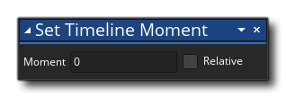

La description
Cette action permet d'ignorer une chronologie du moment actuel à une nouvelle. Les timelines avancent à travers différents «moments», et chaque moment occupe généralement un cadre de jeu (comme l'événement d'étape d'un objet). Une fois qu'une chronologie a commencé, elle progressera à travers les moments jusqu'à ce qu'elle atteigne la fin, moment auquel elle sera soit bouclée au premier moment de la chronologie, soit s'arrêtera complètement. Cependant, cette approche linéaire des timelines peut être modifiée en utilisant cette action pour définir un moment différent à tout moment, vous permettant de créer vos propres boucles de montage, ou de sauter des sections d'un montage dans certaines circonstances, etc... Avec cette action Il suffit de définir le moment pour passer à l'intérieur de la chronologie et le prochain cadre de jeu tournera ce moment (notez que vous devez avoir assigné une ligne temporelle à l'instance en utilisant l'action Définir la chronologie de l'instance ).
Syntaxe de l'action:
Arguments:
Argument La description Moment Le moment de définir le calendrier attribué à
Exemple:

Le code de bloc d'action ci-dessus affectera une chronologie à l'instance appelant les actions ainsi que le moment initial à 10, puis la vitesse de la timeline à 2.